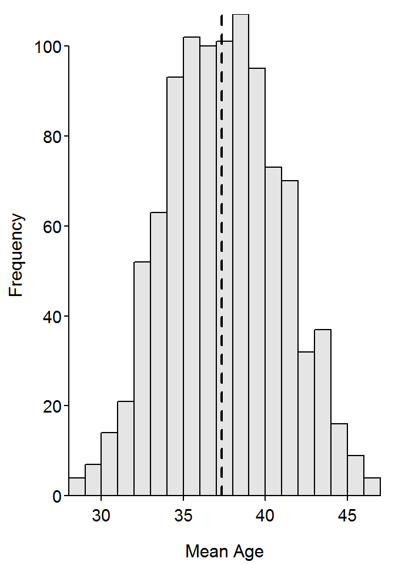
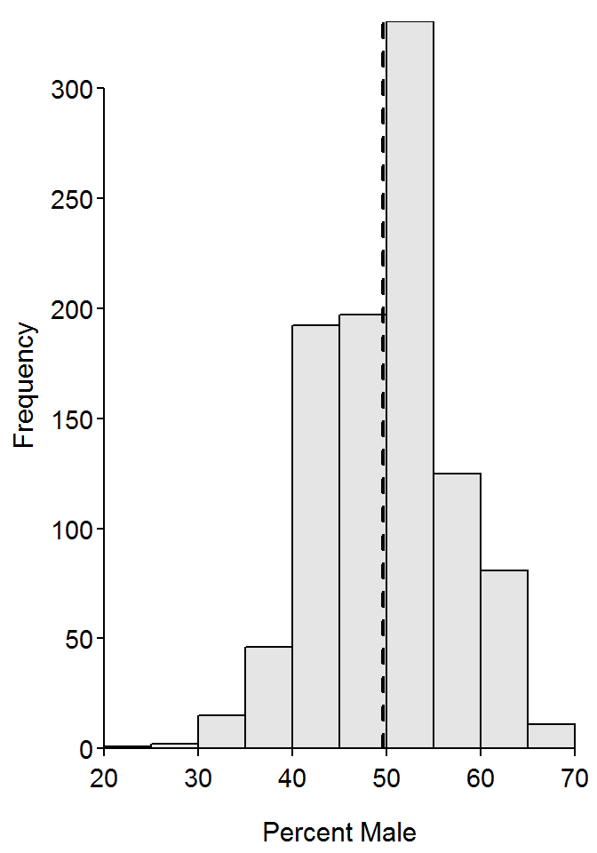

> library(NCStats)> data(ABCens90)
> ( smp1 <- srsdf(ABCens90,50) )> Summarize(~age,data=smp1,digits=1)
> Summarize(~sex,data=smp1)> ( smp2 <- srsdf(ABCens90,50) )
> Summarize(~age,data=smp2,digits=1)
> Summarize(~sex,data=smp2)> Summarize(~age,data=ABCens90,digits=1) n nvalid mean sd min Q1 median Q3
30335.0 30335.0 37.3 24.3 0.0 16.0 35.0 57.0
max percZero
96.0 1.2 > Summarize(~sex,data=ABCens90) freq perc
female 15261 50.31
male 15074 49.69
Total 30335 100.00